Yuan Wang (汪源) |
Yi Xiao is currently a Ph.D. candidate at Wuhan University, School of Geodesy and Geomatics. He received his bachelor in China University of Geoscience and Huazhong University of Science and Technology. Drawing upon the realms of remote sensing image processing, computer vision, and deep learning.
| 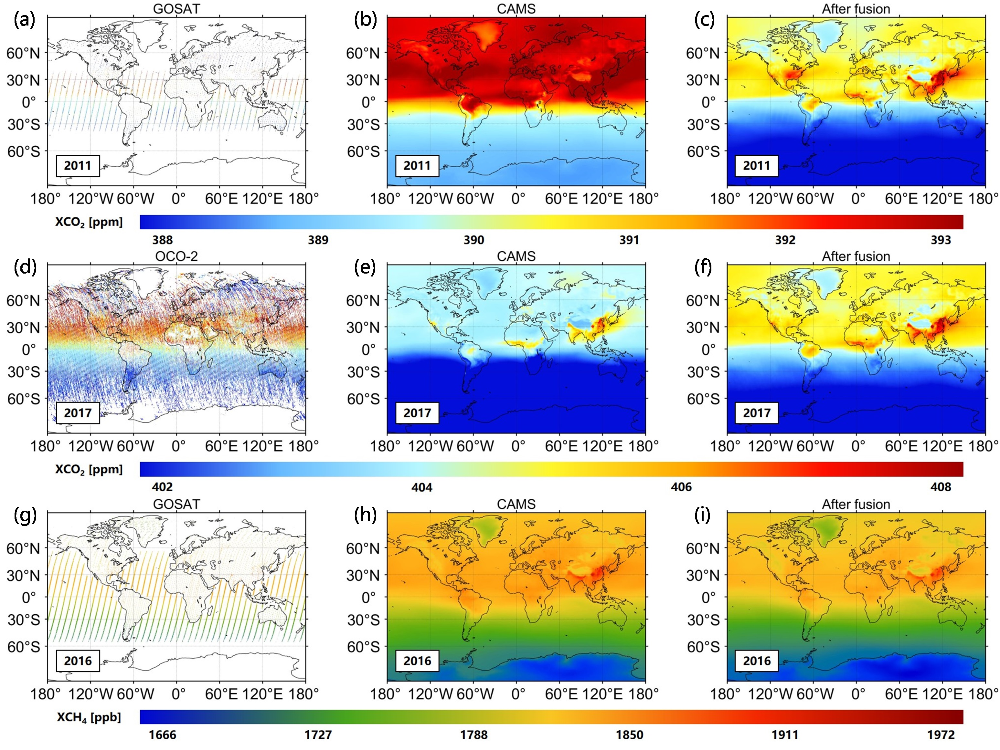 |
Seamless mapping of long-term (2010–2020) daily global XCO2 and XCH4 from GOSAT, OCO-2, and CAMS-EGG4 with a spatiotemporally self-supervised fusion method Earth System Science Data (ESSD), 2023(SCI Q1 TOP, IF: 11.4) [Paper] [Dataset] |
| 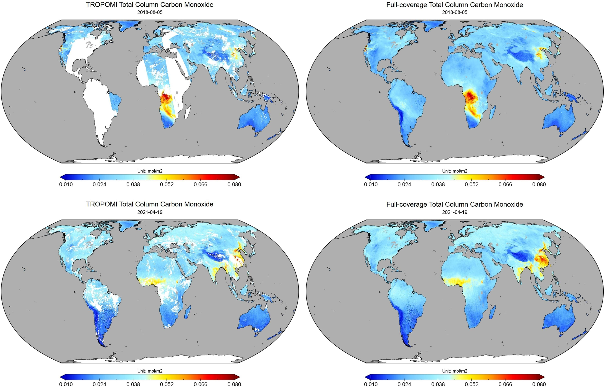 |
Global spatiotemporal completion of daily high-resolution TCCO from TROPOMI over land using a swath-based local ensemble learning method ISPRS Journal of Photogrammetry and Remote Sensing (ISPRS PE&&RS), 2022(SCI Q1 TOP, IF: 12.7) [Paper] [Dataest] |
| 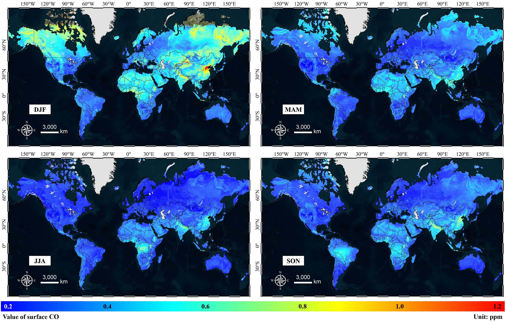 |
Global spatiotemporal estimation of daily high-resolution surface carbon monoxide concentrations using Deep Forest Journal of Cleaner Production (JCLPERO), 2022(SCI Q1 TOP, IF: 11.1) [Paper][Dataset] |
| 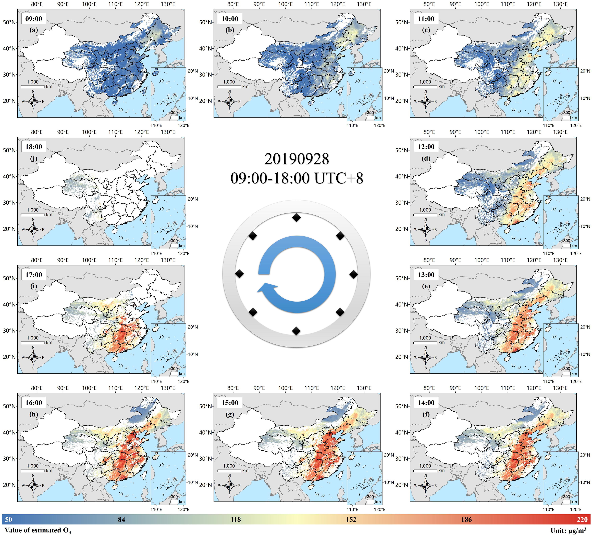 |
Spatiotemporal estimation of hourly 2-km ground-level ozone over China based on Himawari-8 using a self-adaptive geospatially local model Geoscience Frontiers (GSF), 2022(SCI Q1 TOP, IF: 8.9) [Paper] |
| 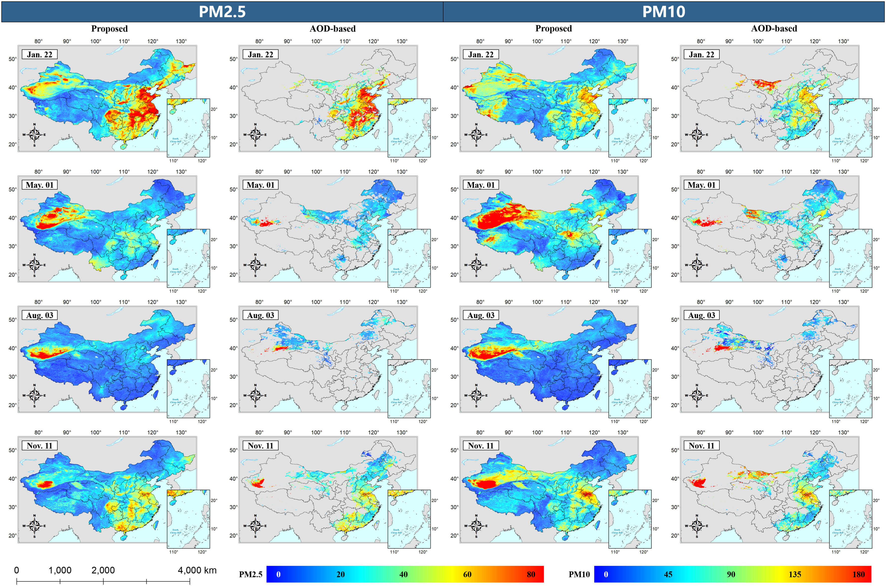 |
Full-coverage spatiotemporal mapping of ambient PM2.5 and PM10 over China from Sentinel-5P and assimilated datasets: Considering the precursors and chemical compositions Science of The Total Environment (STOTEN), 2021(SCI Q1 TOP, IF: 9.8) [Paper] |
| 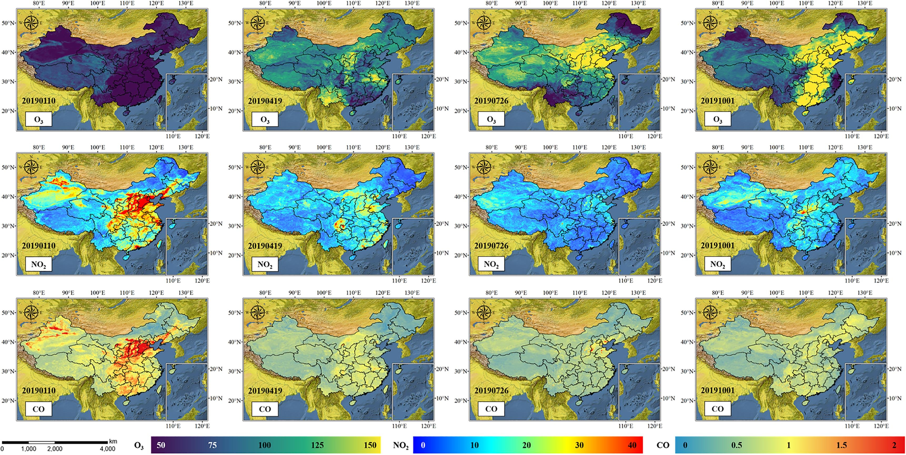 |
Estimating daily full-coverage near surface O3, CO, and NO2 concentrations at a high spatial resolution over China based on S5P-TROPOMI and GEOS-FP ISPRS Journal of Photogrammetry and Remote Sensing (ISPRS PE&&RS), 2021(SCI Q1 TOP, IF: 12.7) [Paper][Dataset] |
| 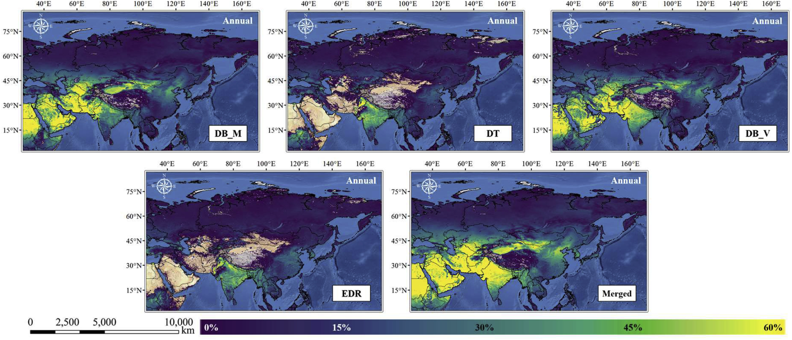 |
Investigating multiple aerosol optical depth products from MODIS and VIIRS over Asia: Evaluation, comparison, and merging Atmospheric Environment (AE), 2020(SCI Q1 TOP, IF: 5.0) [Paper][Dataset] |
| 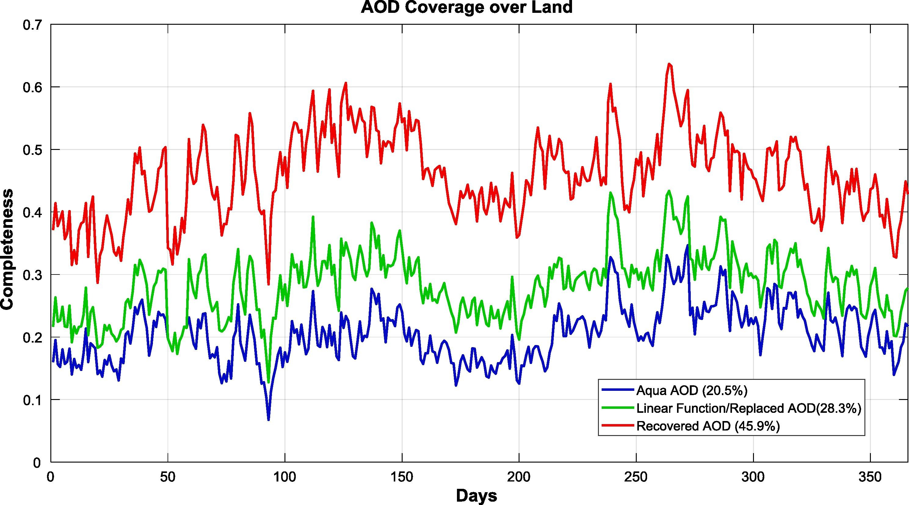 |
Large-scale MODIS AOD products recovery: Spatial-temporal hybrid fusion considering aerosol variation mitigation ISPRS Journal of Photogrammetry and Remote Sensing (ISPRS PE&&RS), 2019(SCI Q1 TOP, IF: 12.7) [Paper] |
| 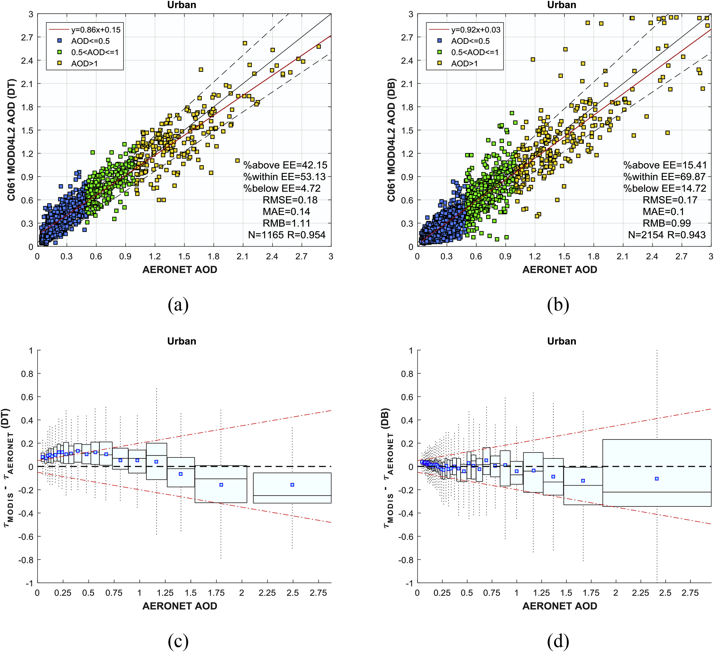 |
Evaluation and comparison of MODIS Collection 6.1 aerosol optical depth against AERONET over regions in China with multifarious underlying surfaces Atmospheric Environment (AE), 2019(SCI Q1 TOP, IF: 5.0) [Paper] |
| 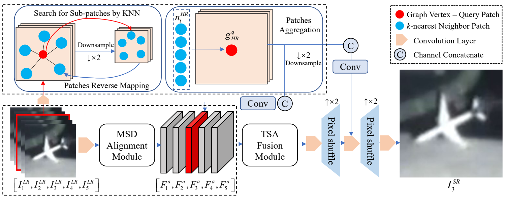 | Learning an Intrinsic Graph Neural Network for Satellite Video Super-Resolution |
| 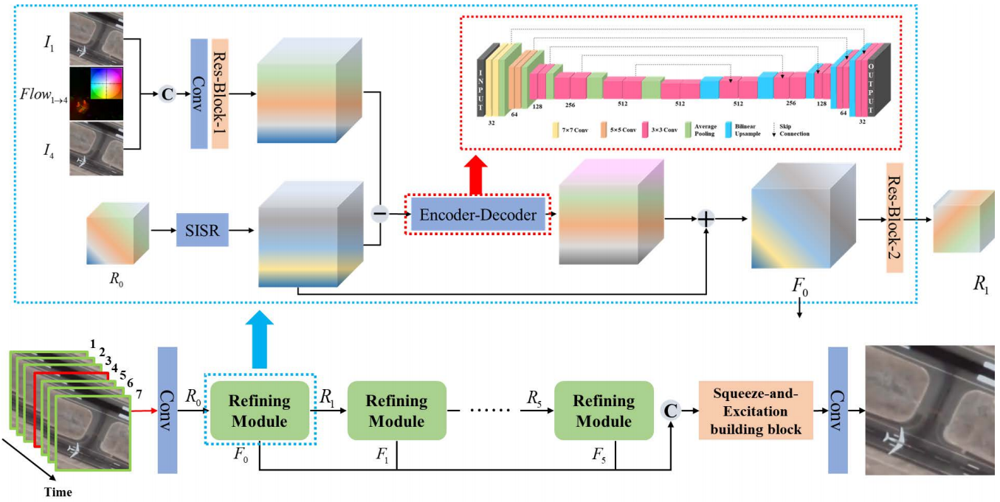 | A Recurrent Refinement Network for Satellite Video Super-Resolution |
Peer Review:
IEEE Transactions on Geoscience and Remote Sensing (TGRS)